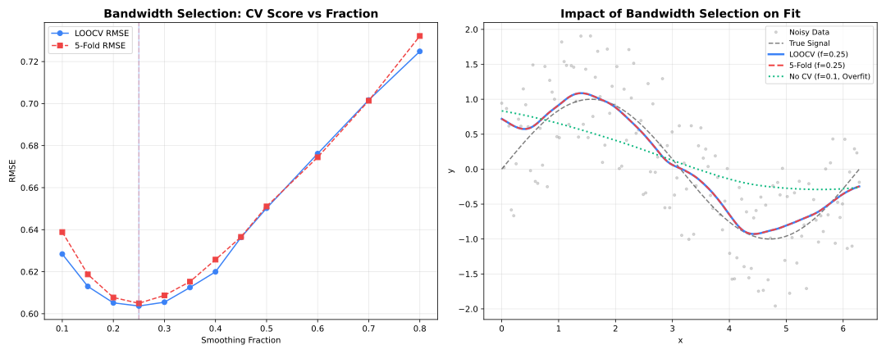
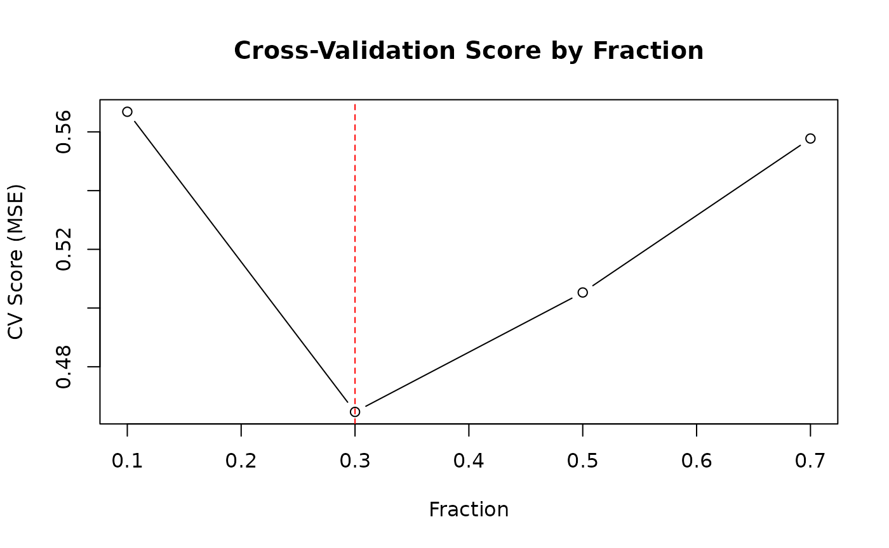

Overview

Cross-validation comparison
Cross-validation helps select the optimal fraction
parameter by evaluating performance on held-out data.
K-Fold Cross-Validation
Split data into K folds, train on K-1, validate on 1. Repeat for each fold and average the scores.
library(rfastlowess)
set.seed(42)
x <- seq(0, 2 * pi, length.out = 100)
y <- sin(x) + rnorm(100, sd = 0.3)
model <- Lowess(
cv_method = "kfold",
cv_k = 5,
cv_fractions = c(0.2, 0.3, 0.5, 0.7)
)
result <- fit(model, x, y)
cat("Selected fraction:", result$fraction_used, "\n")
#> Selected fraction: 0.3
cat("CV scores:", result$cv_scores, "\n")
#> CV scores: 0.4753221 0.43492 0.491747 0.5442841Leave-One-Out Cross-Validation (LOOCV)
Each point is held out once. More thorough but slower than k-fold.
library(rfastlowess)
set.seed(42)
x <- seq(0, 2 * pi, length.out = 100)
y <- sin(x) + rnorm(100, sd = 0.3)
model <- Lowess(
cv_method = "loocv",
cv_fractions = c(0.2, 0.3, 0.5, 0.7)
)
result <- fit(model, x, y)
cat("Selected fraction:", result$fraction_used, "\n")
#> Selected fraction: 0.3Custom Fraction Grid
Provide a fine grid of candidate fractions for more precise selection.
library(rfastlowess)
set.seed(42)
x <- seq(0, 2 * pi, length.out = 100)
y <- sin(x) + rnorm(100, sd = 0.3)
fractions <- seq(0.1, 0.9, by = 0.05)
model <- Lowess(
cv_method = "kfold",
cv_k = 10,
cv_fractions = fractions
)
result <- fit(model, x, y)
cat("Best fraction:", result$fraction_used, "\n")
#> Best fraction: 0.2
cat("CV scores:\n")
#> CV scores:
cat("CV scores by fraction:\n")
#> CV scores by fraction:
print(data.frame(fraction = fractions, score = result$cv_scores))
#> fraction score
#> 1 0.10 0.3851899
#> 2 0.15 0.3711534
#> 3 0.20 0.3508004
#> 4 0.25 0.3517818
#> 5 0.30 0.3568073
#> 6 0.35 0.3651356
#> 7 0.40 0.3839338
#> 8 0.45 0.3965866
#> 9 0.50 0.4080908
#> 10 0.55 0.4202877
#> 11 0.60 0.4398273
#> 12 0.65 0.4541805
#> 13 0.70 0.4652196
#> 14 0.75 0.4796631
#> 15 0.80 0.5049745
#> 16 0.85 0.5205908
#> 17 0.90 0.5358147Inspecting CV Results
After fitting, result$cv_scores contains the CV score
for each candidate fraction in the order they were passed.
library(rfastlowess)
set.seed(42)
x <- seq(0, 2 * pi, length.out = 100)
y <- sin(x) + rnorm(100, sd = 0.3)
fractions <- c(0.1, 0.2, 0.3, 0.5, 0.7)
model <- Lowess(cv_method = "kfold", cv_fractions = fractions)
result <- fit(model, x, y)
plot(fractions, result$cv_scores, type = "b",
xlab = "Fraction", ylab = "CV Score (MSE)",
main = "Cross-Validation Score by Fraction")
abline(v = result$fraction_used, col = "red", lty = 2)
Seeded Randomization
Set a seed for reproducible fold assignments in k-fold CV:
library(rfastlowess)
set.seed(42)
x <- seq(0, 2 * pi, length.out = 100)
y <- sin(x) + rnorm(100, sd = 0.3)
model <- Lowess(
cv_method = "kfold",
cv_k = 5,
cv_fractions = c(0.2, 0.3, 0.5, 0.7),
cv_seed = 42L
)
result <- fit(model, x, y)
cat("Selected fraction:", result$fraction_used, "\n")
#> Selected fraction: 0.7Method Comparison
| Method | Folds | Speed | Variance | Bias |
|---|---|---|---|---|
| KFold(5) | 5 | Fast | Moderate | Low |
| KFold(10) | 10 | Medium | Lower | Lower |
| LOOCV | N | Slow | Lowest | Lowest |
Use 5-fold or 10-fold CV for most applications. LOOCV is only worth it for small datasets (N < 100).
sessionInfo()
#> R version 4.6.1 (2026-06-24)
#> Platform: x86_64-pc-linux-gnu
#> Running under: Ubuntu 24.04.4 LTS
#>
#> Matrix products: default
#> BLAS: /usr/lib/x86_64-linux-gnu/openblas-pthread/libblas.so.3
#> LAPACK: /usr/lib/x86_64-linux-gnu/openblas-pthread/libopenblasp-r0.3.26.so; LAPACK version 3.12.0
#>
#> locale:
#> [1] LC_CTYPE=C.UTF-8 LC_NUMERIC=C LC_TIME=C.UTF-8
#> [4] LC_COLLATE=C.UTF-8 LC_MONETARY=C.UTF-8 LC_MESSAGES=C.UTF-8
#> [7] LC_PAPER=C.UTF-8 LC_NAME=C LC_ADDRESS=C
#> [10] LC_TELEPHONE=C LC_MEASUREMENT=C.UTF-8 LC_IDENTIFICATION=C
#>
#> time zone: UTC
#> tzcode source: system (glibc)
#>
#> attached base packages:
#> [1] stats graphics grDevices utils datasets methods base
#>
#> other attached packages:
#> [1] rfastlowess_3.0.0 BiocStyle_2.40.0
#>
#> loaded via a namespace (and not attached):
#> [1] cli_3.6.6 knitr_1.51 rlang_1.3.0
#> [4] xfun_0.60 otel_0.2.0 generics_0.1.4
#> [7] textshaping_1.0.5 jsonlite_2.0.0 htmltools_0.5.9
#> [10] ragg_1.5.2 sass_0.4.10 rmarkdown_2.31
#> [13] evaluate_1.0.5 jquerylib_0.1.4 fastmap_1.2.0
#> [16] yaml_2.3.12 lifecycle_1.0.5 bookdown_0.47
#> [19] BiocManager_1.30.27 compiler_4.6.1 fs_2.1.0
#> [22] htmlwidgets_1.6.4 systemfonts_1.3.2 digest_0.6.39
#> [25] R6_2.6.1 bslib_0.12.0 tools_4.6.1
#> [28] BiocGenerics_0.58.1 pkgdown_2.2.1 cachem_1.1.0
#> [31] desc_1.4.3